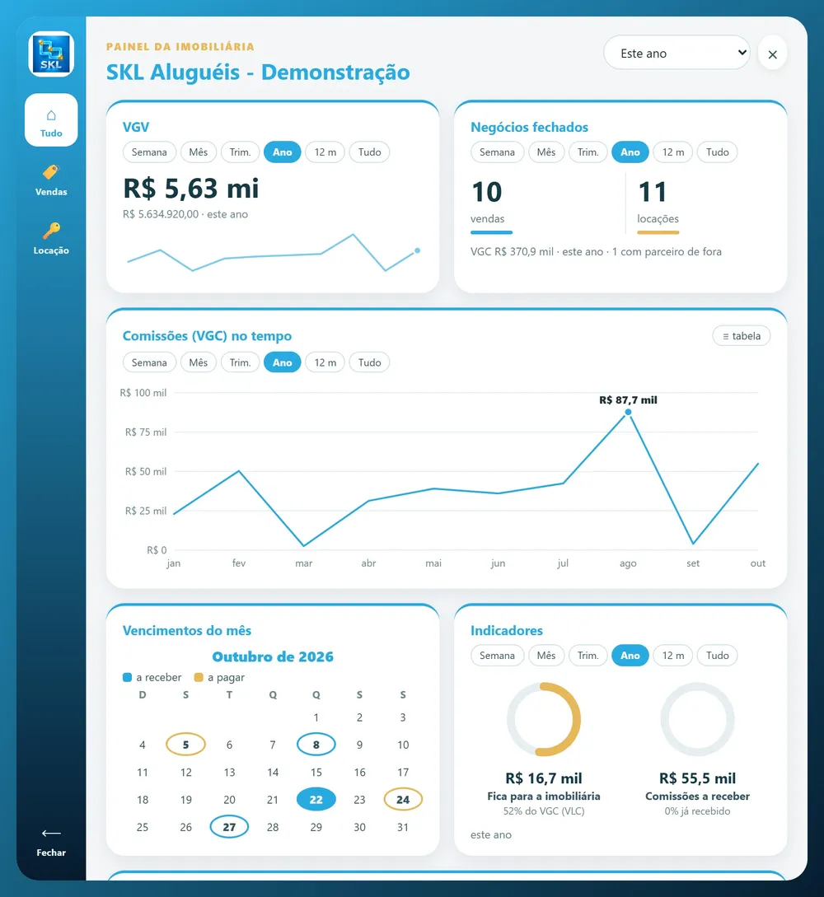

Idioma
Pantallas, mensajes, informes y documentos en el idioma de su equipo y de sus clientes.
Plataforma de operación comercial y gestión visual de emprendimientos, entregada con el nombre, el logo y los colores de su empresa — y adaptada al idioma y a las reglas inmobiliarias de su país.


Cada país tiene su idioma, su moneda, sus documentos y su forma de vender, alquilar y registrar inmuebles. La plataforma de SKL se adapta a esas reglas en la implantación: usted recibe un sistema hecho para su mercado, con la marca de su empresa.
Pantallas, mensajes, informes y documentos en el idioma de su equipo y de sus clientes.
Valores, cuotas, comisiones e informes en la moneda local, con las reglas fiscales de su país.
Los documentos de identidad, de la empresa y del inmueble que exige su país, en lugar de los de Brasil.
Plazos de reserva, formas de pago, simulación de financiamiento, comisiones y contratos según su política.
Lotes, manzanas y áreas en el sistema de medidas que usa su mercado (m², hectáreas y otros).
Conexión con el CRM, el ERP, los portales o los bancos que su empresa ya usa, evaluada caso a caso.
Hoy la interfaz está en portugués (Brasil). La versión en su idioma y con las reglas de su país se prepara durante la implantación y forma parte de la propuesta. Las pantallas de este sitio usan datos ficticios de demostración.
Su equipo y sus clientes no usan “el sistema de SKL”: usan el sistema de su empresa. Nombre, logo y colores en la central, en la app del corredor, en los PDF y en las fotos.


Central, app del corredor y página del inmueble enviada al cliente con el nombre, el logo y los colores de la empresa.
El equipo entra por un enlace propio, que puede usar una dirección de su empresa, y lo instala en el celular como aplicación.
Informes, propuestas, recibos y contratos en PDF con su logo, y fotos de los inmuebles con su marca de agua.
Pantallas con marcas ficticias, creadas solo para mostrar la personalización. Toque cualquier pantalla del sitio para ampliarla.
El stock completo bajo control: cada lote vinculado a su posición real, a sus datos técnicos y al proceso comercial.


La unidad vinculada a su posición real. El cliente ve la planta, el piso y las terminaciones; el corredor presenta y reserva sin salir de la ficha.


Sin regla, un corredor puede reservar por tiempo indefinido y trabar la venta para todo el equipo. El control de tiempo lo evita sin que nadie tenga que reclamar.
El corredor solo puede tener un pedido por inmueble.
Sin respuesta, el pedido vence solo y el inmueble sigue libre.
Aprobada la reserva, hay 2 horas para concluir, con cuenta regresiva.
Si no concluye, el inmueble vuelve a Disponible y ese corredor queda 24 h sin reservarlo.

Los tiempos son configurables. Los valores mostrados son el estándar sugerido y se ajustan por emprendimiento, según la política de la empresa.
Para la inmobiliaria que vende y alquila: clientes, negociaciones, agenda, inmuebles, administración de alquileres y app del corredor.



La implantación y la mensualidad dependen del país, del tamaño del equipo, de las adaptaciones y de las integraciones. Envíenos un mensaje y preparamos una propuesta.
Sí. La plataforma funciona en la nube y se adapta en la implantación al idioma, la moneda, los documentos y las reglas inmobiliarias de su país. Hoy la interfaz está en portugués; la versión en su idioma forma parte de la propuesta.
No. El sistema funciona en la nube y el equipo solo inicia sesión. El corredor usa un enlace en iPhone, Android y computadora.
Sí. Cuando hay integración, su CRM sigue siendo la fuente oficial y SKL entrega esos datos como una herramienta visual y operativa. Cada integración se evalúa caso a caso.
Sí. Hacemos una demostración en vivo, por videollamada, con la aplicación funcionando, y usted recibe una propuesta a medida.
Agende una demostración en vivo por videollamada y reciba una propuesta adaptada a su país y a su operación.